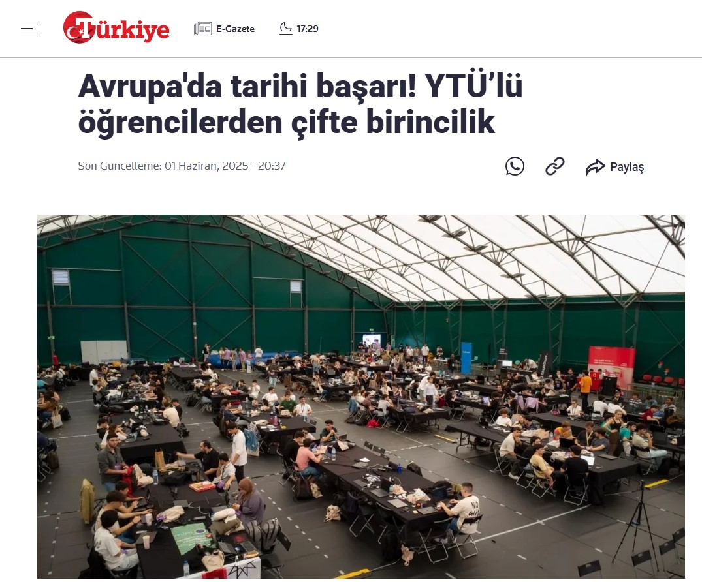

Avrupa'da Tarihi Başarı: YTÜ'lü Öğrencilerden Çifte Birincilik
"Avrupa'nın Teknofesti" olarak bilinen prestijli teknoloji yarışması Shift Appens'ta, Yıldız Teknik Üniversitesi öğrencileri ve Deptron kurucuları geliştirdikleri yapay zeka destekli otonom sistemlerle iki büyük ödül kazanarak Türkiye'ye gurur yaşattı.
Yıldız Teknik Üniversitesi (YTÜ) öğrencileri Meryem Koç ve arkadaşları, Portekiz'de düzenlenen ve Avrupa'nın en önemli teknoloji buluşmalarından biri olan Shift Appens hackathon'unda geliştirdikleri proje ile teknoloji dünyasının dikkatini üzerine çekti.
Rakiplerini Geride Bıraktılar
Dünyanın dört bir yanından gelen yetenekli mühendislerin ve yazılımcıların yarıştığı etkinlikte, Deptron Robotics ekibi geliştirdikleri otonom navigasyon ve yapay zeka çözümleriyle jürinin beğenisini topladı. Zorlu geçen 48 saatlik maratonun sonunda ekibimiz, hem teknik jüri değerlendirmesinde hem de katılımcı oylamasında zirveye yerleşti.
- Meryem Koç, Deptron Robotics Kurucu Ortağı
Kazanılan Ödüller
Yarışma sonucunda ekibimiz iki farklı kategoride ödül alarak "Çifte Birincilik" unvanını elde etti:
- En İyi Otonom Çözüm (Best Solution): Geliştirilen SLAM algoritmaları ve gerçek zamanlı veri işleme yeteneği ile teknik kategoride birincilik.
- Halkın Favorisi (Public Favorite): Sunum performansı ve projenin uygulanabilirliği ile katılımcıların oylarıyla kazanılan birincilik.
Gelecek Hedefleri
Bu başarı, Deptron Robotics'in küresel pazara açılma vizyonunun ilk adımlarından birini oluşturuyor. Teknofest'teki finalistlik başarısının ardından Avrupa arenasında kazanılan bu zafer, yerli teknolojinin rekabet gücünü kanıtlar nitelikte. Ekip, geliştirdikleri otonom depo robotlarını 2030 yılına kadar küresel pazarda standart haline getirmeyi hedefliyor.
Haberin detaylarına aşağıdaki bağlantıdan ulaşabilirsiniz.